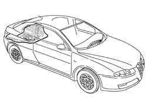
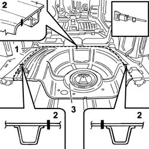
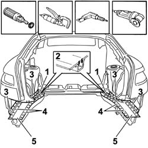
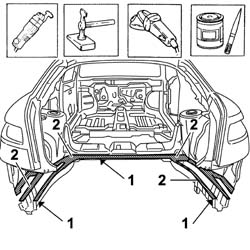
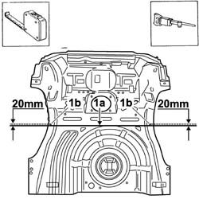
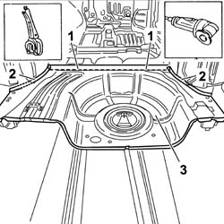
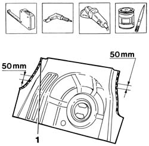
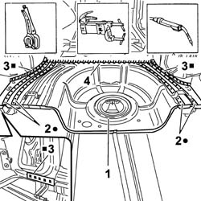
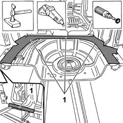
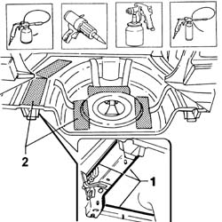

7210B56 R.R. BOOT/LOAD CARRYING COMPARTMENT FLOOR (PARTIAL REAR OPERATION)
- Path
- Procedures > 72 PANELS AND FRAME > 7210 REMOVING REFITTING > 7210B STRUCTURE ELEMENTS-CENTRAL AND REAR PART > 7210B56 R.R. BOOT/LOAD CARRYING COMPARTMENT FLOOR (PARTIAL REAR OPERATION)
- Kind
- repair procedure (removal / refitting; the operation number is the code)
- Applies to
- all engines; all production periods
- Interactive page
- https://sloeber94.github.io/elrnDB-aGt/en/#/125002048
Applies to: all engines; all production periods
 Removing
Removing
 Refitting
Refitting- Op. 7210B70 REAR TRIM
- Check that the components connected are not distorted by checking the bodyshell alignment measurements using suitable equipment (gauges, templates or jigs).
- Straighten the body as necessary.

Applies to: all engines; all production periods
- Use the power saw following the dotted lines in the diagram.
- Cutting sections representing the most important points in order to allow the operator to adjust the position and the depth of the cut in order not to damage the panels underneath.
- Remove the floor in the centre zone.

Applies to: all engines; all production periods
- Trace the area to be cut using the circular saw on the floor.
1. Use the circular saw following the dotted lines in the diagram.
2. Cutting sections.
- Use the rotary brush to clean the edges of the panel to highlight the spot welds.
3. Use the drill to remove the spot welds shown in the diagram.
4. Use the chamfering machine on the spot welds shown.
- Use the hammer and chisel and remove the spot welds chamfered previously.
5. Remove the edges of the panel on the boot floor side members.

Applies to: all engines; all production periods
- Use a vibrating knife and special blade to remove the P.V.C. treatment.
- Straighten the edges of the vehicle using a hammer and dolly block.
- Remove the spot weld residues using a disc grinder.
- Apply electro-galvanizing paint.

Applies to: all engines; all production periods
Refitting
Removing- Working at the bench, cut the replacement part following the cutting line (1a), keeping to the figure given in the diagram for the side openings (1b).

Applies to: all engines; all production periods
- Position the replacement part on the vehicle and secure it using self-locking clamps or Parker screws.
1. Check that the panel is correctly superimposed in the join area between the replacement part and the centre crossmember.
2. Check that the panel is correctly superimposed between the replacement part and side wheel arches.
- Trace the cutting line user the tracer point.
- Use the circular saw and cut along the line traced previously.
3. Remove the replacement part from the vehicle.
- Remove the offcuts and treat the edges of the vehicle underneath.

Applies to: all engines; all production periods
- Work at the bench and make equidistant holes as illustrated.
- Remove the anti-corrosion treatment from the entire area of the inside and outside of the replacement part illustrated.
- Apply the electro-weldable paint to the edges in contact with the vehicle.

Applies to: all engines; all production periods
- Position the floor in the vehicle and secure it using self-locking clamps.
- Use a spot welder in the areas shown in the diagram.
- Use a MIG welder and weld the openings made previously in the replacement part.
- Repeat the operation on the right side of the vehicle.
4. Use a MIG welder and seam weld as illustrated in the diagram.

Applies to: all engines; all production periods
- Correct any distortions to the panel using a dolly block.
- Use a disc grinder to remove and level the spot welding residues.

Applies to: all engines; all production periods
- Apply anti-oxidant protective to the areas previously affected by the welding.
1. Seal the join lines between the replacement part and the vehicle using sealant.
- Renew the P.V.C. treatment.
2. Fit the sound insulation panels.
- Paint the load carrying compartment floor (following the recommended cycle).
- Proceed with the waxing stage.

Applies to: all engines; all production periods